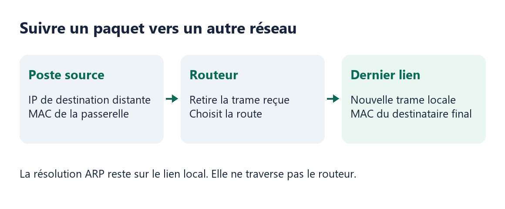

Comprendre le cours
Séparer l’inventaire, la liaison et l’adressage
Lance une découverte sur le périmètre du TP, par exemple nmap -sn 192.0.2.0/28 en maquette. Distingue les résultats observés des informations fournies par le plan. Note la date et le point d’observation.
Indique le type et la localisation de chaque appareil. Sur le dessin logique, montre les réseaux et les interfaces des routeurs. Sur le plan physique, montre les baies, prises, câbles et salles.

Comprendre la frontière du réseau local
Le masque participe à déterminer si un voisin se trouve sur le même réseau. Avec 192.0.2.10/24 et un voisin 192.0.2.20, le réseau est 192.0.2.0/24. Pour une destination 198.51.100.20, utilise une passerelle ou une route spécifique.
Vérifie les entrées avec ip neigh. Dans Wireshark, compare la destination Ethernet et la destination IPv4 du même paquet.
Distinguer brassage, commutation et routage
Compte deux prises par poste quand le cahier des charges demande une prise PC et une prise téléphone. Compte aussi les bornes, vidéoprojecteurs et équipements de réunion. Vérifie le nombre de ports PoE et le budget de puissance.
Sépare par usage si le besoin le justifie. Par exemple, un réseau visiteurs atteint Internet via le routeur, tandis que l’accès aux équipements internes dépend de règles explicites.
Pourquoi retrouve-t-on la même adresse matérielle pour plusieurs destinations distantes ?
Sur Ethernet, une trame rejoint le prochain équipement du trajet. Si deux serveurs distants passent par la même passerelle, les paquets ont deux adresses IP de destination différentes mais les trames émises sur ton réseau portent toutes deux l’adresse matérielle de la passerelle.
Dessine le poste, la passerelle et les deux serveurs. Entoure le premier câble et prédis ce qu’une capture à cet endroit peut révéler. Pour identifier l’adresse matérielle finale, il faudrait observer le lien où le serveur est directement raccordé.
TP1 · Pourquoi Nmap ne donne-t-il pas toutes les adresses MAC ?
Sigles et acronymes
- ARP · Address Resolution Protocol
- Recherche de l’adresse MAC correspondant à une IPv4 locale.
Exemple. Pour joindre sa passerelle IPv4, le PC demande quelle adresse MAC lui correspond. - ICMP · Internet Control Message Protocol
- Protocole de messages de contrôle IP.
Exemple. Le ping envoie une requête Echo et attend une réponse Echo. - IP · Internet Protocol
- Protocole d’adressage et d’acheminement des paquets.
Exemple. Le routeur lit l’IP de destination pour choisir où envoyer le paquet. - IPv4 · Internet Protocol version 4
- Version d’IP à adresses de 32 bits.
Exemple. 192.168.20.1 est une adresse IPv4. - LAN · Local Area Network
- Réseau local.
Exemple. Le réseau des PC de la salle est un LAN. - MAC · Media Access Control
- Identifiant de couche liaison d’une interface dans ce cours.
Exemple. Le switch utilise la MAC de destination pour envoyer une trame vers le bon port. - VLAN · Virtual Local Area Network
- Réseau local logique séparé sur une infrastructure partagée.
Exemple. Un switch sépare les postes du personnel et ceux des invités dans deux VLAN.
Du cours aux TD et TP
Les questions sont tirées des énoncés conservés dans les comptes rendus TP1 et TP2. Les adresses du campus et les relevés des participants ont été remplacés par des exemples de maquette.
Questions TD & TP
TP1 · Pourquoi Nmap ne donne-t-il pas toutes les adresses MAC ?
Énoncé reformulé. Inventorier les équipements puis expliquer pourquoi les MAC des postes de certaines salles ne remontent pas.
- Vérifie ton préfixe avec
ip -br addret la route avecip route get <destination>. Lance la découverte sur la plage du TP. - Fais un test local puis un test routé. Relève dans la capture les adresses IPv4 et Ethernet. Compare avec
ip neigh. - Dans le tableau d’inventaire, indique « non observable depuis ce poste » pour une MAC distante tant qu’une source autorisée ne l’a pas confirmée.
TP1 et TP2 · Monter une baie et concevoir le réseau d’un bâtiment
Énoncé reformulé. Dans Packet Tracer, réaliser le câblage physique. Puis placer la baie et les prises du bâtiment, choisir l’adressage et les équipements du TP2.
- Dans la vue Physique, place la baie dans le local, ajoute les équipements compatibles et garde le PC ou le modem sur la table quand demandé. Câble en vérifiant chaque port et étiquette les liaisons.
- Sur le plan d’entreprise, place la baie selon les cheminements et compte les prises nécessaires par pièce. Réserve des ports PoE pour les téléphones et bornes, puis note quelles liaisons sont de niveau deux ou routées.
- Pour un exemple de maquette, choisis employés
192.0.2.0/26avec passerelle192.0.2.1et visiteurs192.0.2.64/26avec passerelle192.0.2.65. Vérifie le lien, l’adresse, le ping de la passerelle puis les accès prévus. Teste aussi un accès qui doit être bloqué.